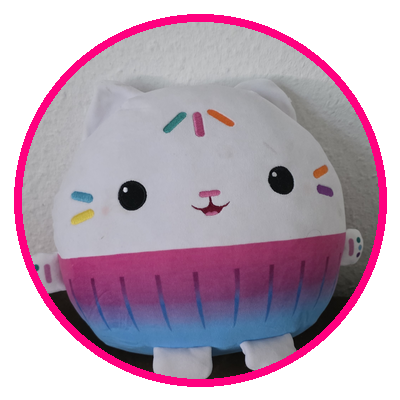

Kotek-Babeczka
Model: Google Flow / VEO 3.1 • Długość: 8 sekund • Audio: Polski Lektor
Kwestia Mówiona przez Pluszaka (Polish Toddler Voice):
„Cześć Dianusiu! Jestem twoim Kotkiem-Babeczką, chodź się przytulić do kocyka!”
🎬 Pełny Prompt do Google Flow / VEO 3 (Angielski z Dialogiem):